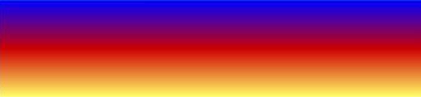

In this example, we will look at the technique of using the noise values to modulate a gradient along the y-axis, given by the function f(y) = y / height. The same idea can be used to modulate other functions such as f(x) = x / width, or vertical or horizontal uses of trig functions including radial gradients.
The following code will create a BufferedImage that
matches the above graphic. A template has been provided (see the
"Code Template" button) where you can copy and paste this code
and run it as a stand-alone Java program. You will also need to
load the ColorMap class, which can be obtained via the "ColorMap
Source" button. Code lines that are different from previous examples
are bolded.
int[][] pegs = { // location, R, B, G, alpha
{0, 0, 0, 255, 255},
{128, 204, 0, 0, 255},
{255, 255, 255, 102, 255}};
int[][] colorMap = ColorMap.makeMap(pegs);
BufferedImage image = new BufferedImage(width, height,
BufferedImage.TYPE_INT_ARGB);
WritableRaster raster = image.getRaster();
int[] pixel = new int[4];
pixel[3] = 255; // alpha = opaque
int[] octaveXScale = {4, 8, 16, 32};
int[] octaveYScale = {2, 4, 8, 16};
int[] octaveAmplitude = {8, 4, 2, 1};
int octaves = octaveXScale.length;
float amplitudeSum = 0;
for (int i : octaveAmplitude) amplitudeSum += i;
float noiseAmplitude = 0.33f;
float noiseSum = 0;
for (int y = 0; y < height; y++)
{
for (int x = 0; x < width; x++)
{
noiseSum = 0;
for (int i = 0; i < octaves; i++)
{
noiseSum += SimplexNoise.noise(
x * octaveXScale[i]/256f,
y * octaveYScale[i]/256f )
* ( octaveAmplitude[i]/amplitudeSum );
}
noiseSum *= noiseAmplitude;
noiseSum += y / (float)height;
noiseSum *= 256;
noiseSum = Math.max(noiseSum, 0);
noiseSum = Math.min(noiseSum, 255);
int idx = (int)noiseSum;
pixel[0] = colorMap[idx][0];
pixel[1] = colorMap[idx][1];
pixel[2] = colorMap[idx][2];
raster.setPixel(x, y, pixel);
}
}
This code illustrates an implementation of the technique of using noise to modulate another function. One of the most common functions subjected to noise modulation is a color gradient. Color gradients are useful enough that Java2D includes a GradientPaint and a RadialGradientPaint class. Here, we will calculate and draw the gradient explicitly, using a ColorMap that transitions from a nice bright yellow to a medium red to a background blue color. Then, we will alter (modulate) the gradient by adding in a noise component.
Much of this code should be familiar. In fact, I only had to bold
three new lines of code for concepts not implemented in previous
examples. The first is the declaration of a new variable where we
will hold a factor to use to control the strength of the noise
component: noiseAmplitude.
As before, we iterate through the octaves, here set up to
be stretched in the vertical direction, and compute a noiseSum
value. This value will have the range of -1 to 1. Then, we
will multiply this value by noiseAmplitude to scale it
to a range that will give us the desired amount of modulation.
The expression y / (float)height gives us the
gradient component, scaled to a normalized range (0 to 1). The
float cast is used to prevent integer division, necessary
since both the Y iterator and the height
variable are integers. This expression returns a value that goes
from 0 to 1 as we move down the image.
Below is a graphic that shows what we would have if we only had
the Y component, and no noise. You can see this in the
Texture Tool by turning all the stage one mixer sliders down to 0,
or by assigning 0 to noiseAmplitude in the
sample code.
Fig. 1, Y-oriented gradient, with zero noise modulation
Since the y-gradient is normalized, and the noise value is in the
range -1 to 1, mixing them together would result in a range that
goes from -1 to 2, and in which the noise component would be twice
as large as the gradient it was supposed to be modulating. You can
alter the code example to see what this looks like by making
noiseAmplitude equal 1, and putting in a proper translate and
scale so that the -1 to 2 range can map into the 256 positions of
the color map.
After playing around, I decided that 0.33 was a nice amount by which to scale the noise component. As a result, the noise values will now range from -0.33 to 0.33, and so, will not swamp the normalized gradient. The resulting range will be from -0.33 to 1.33, so we will still have to manage the mapping to 0 to 255.
Amid the many possibilities, I decided to take the course of
action of clamping, as can be seen by the presence of the
min and max functions. The over-exposure
quality of the yellow that results seems to me to communicate a sense
of high heat, so that works out well.